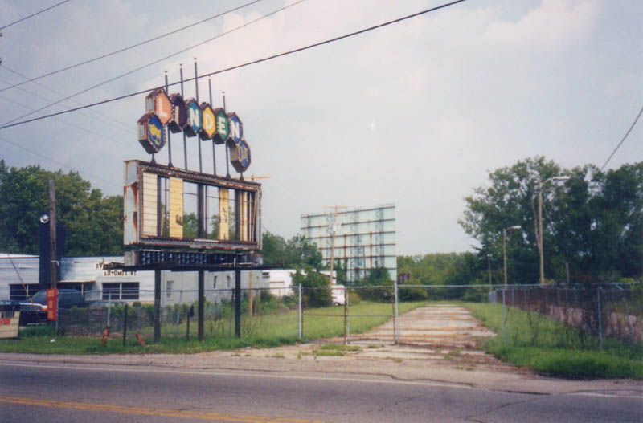
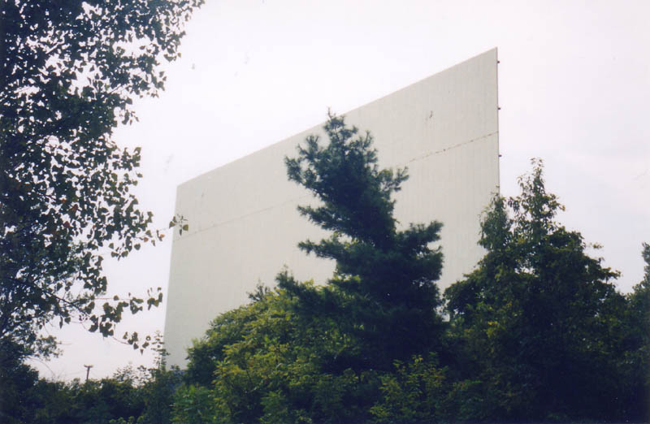
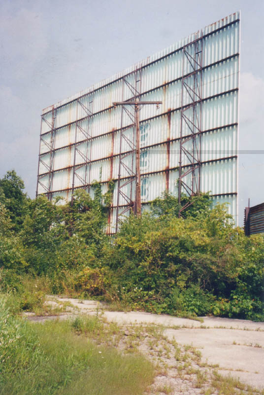
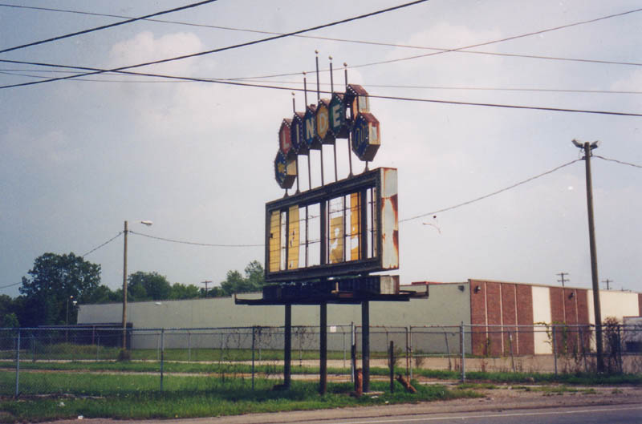
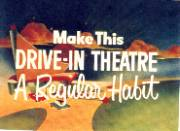

One of Ohio's many defunct drive-ins is still standing and in pretty decent shape on Cleveland Avenue south of Morse Road: the Linden Air.

What little I know about the Linden Air comes from talking to people over forty who remember going there to watch movies in the heyday of the drive-in. According to one guy, the Linden was open all year round at one point, which is a phenomenon I had not heard of in Ohio. He remembers watching movies there when it was freezing cold outside, and running up to the ticket booth to talk to a girl his friend was going out with. Something about the drive-in evokes those nostalgic memories.

Now the Linden is defunct and nearly forgotten in its scrubby field behind an auto accessory place and some sort of trucking company. The long driveway is still there, leading back past the spot where there should be ticket booths. Once you came up behind the single screen you could drive either way down the rows, then turn in and find a spot beside one of the speaker poles (all of which are gone now).
The screen itself is in very good shape--unlike the lot where people watched movies, which is overgrown with tall weeds. At the front of field the screen is now obscured by a line of trees which must have grown up over the last decade or two.
Columbus, by my calculations, was Ohio's drive-in leader in the twentieth century. It's surprising, because Cleveland spent a large part of the last century as one of America's top-ten cities, and Cincinnati has always been big. The list of defunct theaters I've assembled can be seen here.
If you know anything about the history of the Linden Air, or if you recall going there when you were younger, I'd love to hear from you about it.

Ohio's Forgotten Drive-Ins
40 East Twin Drive-In
The Heath Drive-In
Hocking Theater Drive-In
Kingman Drive-In Theater
The Lake Drive-In
The Leatherwood Drive-In
The Linden Air Drive-In
The Show Boat Drive-In
The Skyline Drive-In

Back